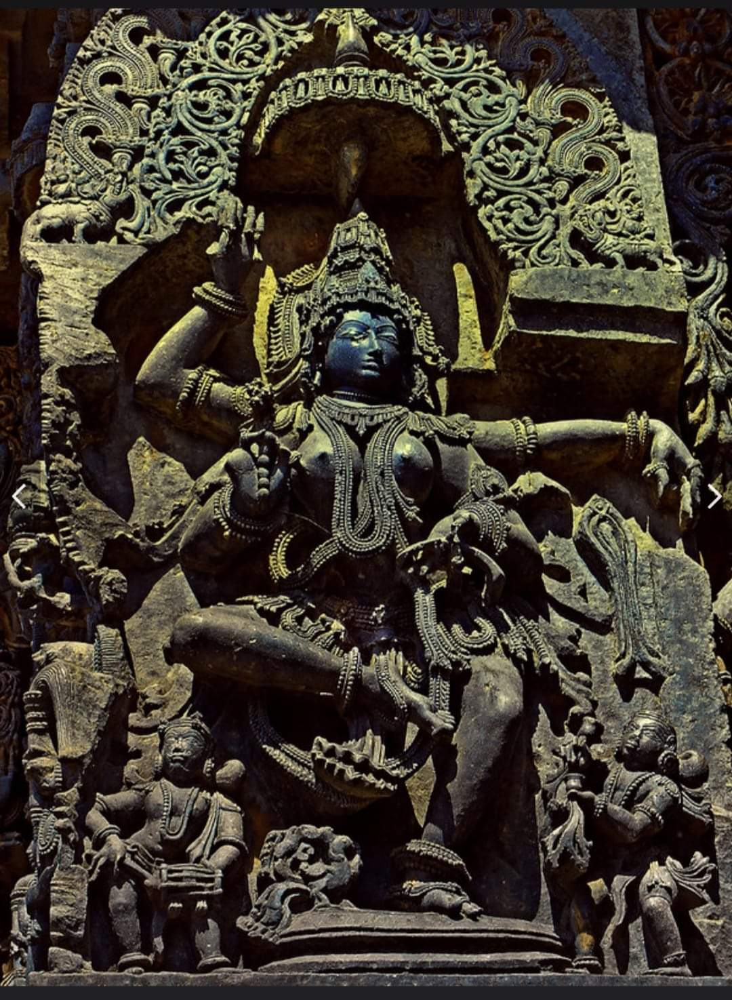
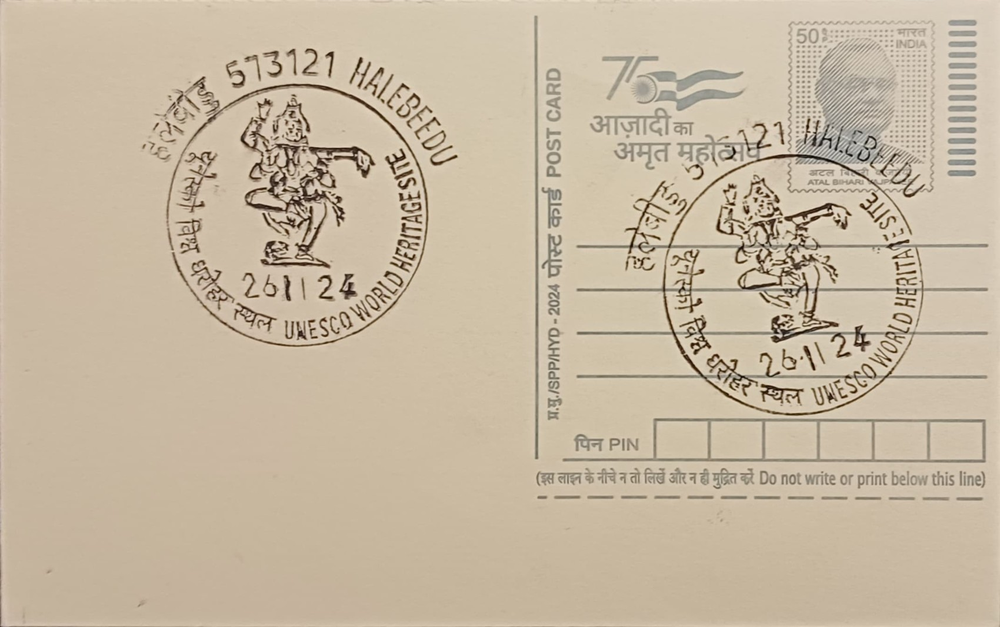

The name Natya Saraswati joins two Sanskrit words, natya (dance or dramatic performance) and Saraswati, the goddess of learning, speech, and the arts, to denote a form in which the usually serene, veena-bearing deity is instead rendered mid-dance, caught in rhythmic motion. This naming convention follows a practice common to the Hoysala bracket figures of Belur, where sculptures were given descriptive or poetic titles identifying the pose, activity, or attribute of the figure rather than a single canonical scriptural name, a tradition later reinforced in the twentieth century when the Kannada poet D.V. Gundappa composed verses describing many of these madanikas in his collection Antahpura Geethegalu.
Within the iconographic programme of the Chennakesava Temple, Natya Saraswati belongs to the category of madanikas or shalabhanjikas, bracket figures placed at the junction of pillar and eave beneath the overhanging roof of the temple's open mantapa. Of the figures that survive at Belur, the majority are set on the outer walls with a smaller number placed inside the hall, and each is traditionally held to bear the signature of the artisan who carved it, an unusual feature that gives historians a rare direct record of individual sculptors working under Hoysala patronage. The group as a whole is significant for fusing religious iconography with depictions of courtly life, dance, music, and daily ritual, making the bracket figures a visual record of Hoysala-era aesthetics as much as a devotional programme.
The Chennakesava Temple itself was commissioned by the Hoysala king Vishnuvardhana beginning in 1117 CE, traditionally said to commemorate a military victory and his shift in religious patronage under the Vaishnava teacher Ramanuja, and its construction is popularly associated with the sculptor-architect Jakanachari, a native of Kaidala in present-day Tumakuru district credited in local legend with overseeing the temple's stonework. The madanikas, carved from fine-grained soapstone (chloritic schist) that permitted an exceptional level of detail, were worked using a technique in which the stone was cut soft and allowed to harden with age, letting sculptors render minute ornamentation such as layered necklaces, girdles, and elaborately dressed hair alongside the twisting, weight-shifted postures associated with classical dance. Natya Saraswati, in keeping with this style, presents the deity's limbs, drapery, and gesture in a single arrested instant of movement rather than in static frontal symmetry.
A distinguishing feature of this group of bracket figures is the sheer variety of coiffure and ornament the sculptors devised across the surviving figures, reportedly numbering in the hundreds of distinct hairstyle and jewellery combinations, a detail often cited to illustrate how individual artisans used the small format of the bracket to display technical range rather than repeat a single template. Figures such as Natya Saraswati are consequently read not only as devotional images but as studies in posture and costume, comparable to other named madanikas at Belur such as Darpana Sundari, shown with a mirror, or Shuka Bhashini, shown conversing with a parrot, each illustrating a distinct activity or emotional state within the same sculptural programme.
The Chennakesava Temple complex, together with the Hoysaleswara temple at nearby Halebeedu and the Kesava temple at Somanathapura, was inscribed by UNESCO in 2023 under the title Sacred Ensembles of the Hoysalas, recognising the group for its sculptural density and craftsmanship rather than scale of architecture. The temple remains an active site of worship administered under state protection, with the Archaeological Survey of India and the Karnataka state archaeology department overseeing conservation of the stonework, while the bracket figures continue to draw dedicated study from art historians documenting Hoysala iconography figure by figure. Visitors to Belur today are typically guided past Natya Saraswati and its companion madanikas as one stop in a circuit of the mantapa pillars, a sequence that tour guides and temple literature alike still present as a kind of sculpted gallery of twelfth-century courtly life.
| Date of Introduction | January 2, 1978 |
|---|---|
| Address | Sub Postmaster, |
| Halebeedu SO, | |
| Hassan (dt.), Karnataka - 573121. |